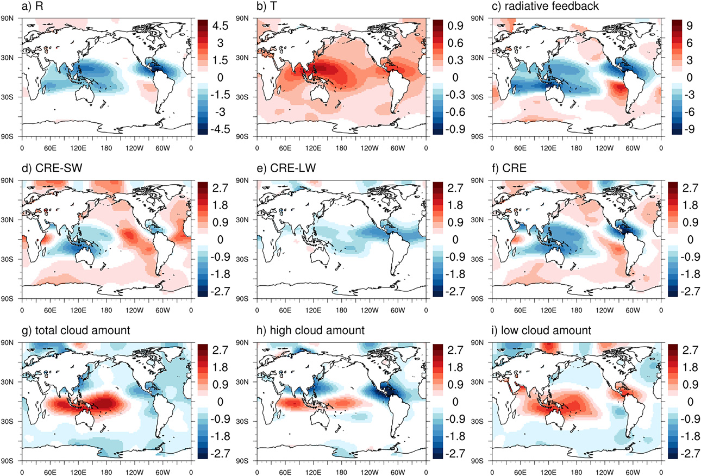
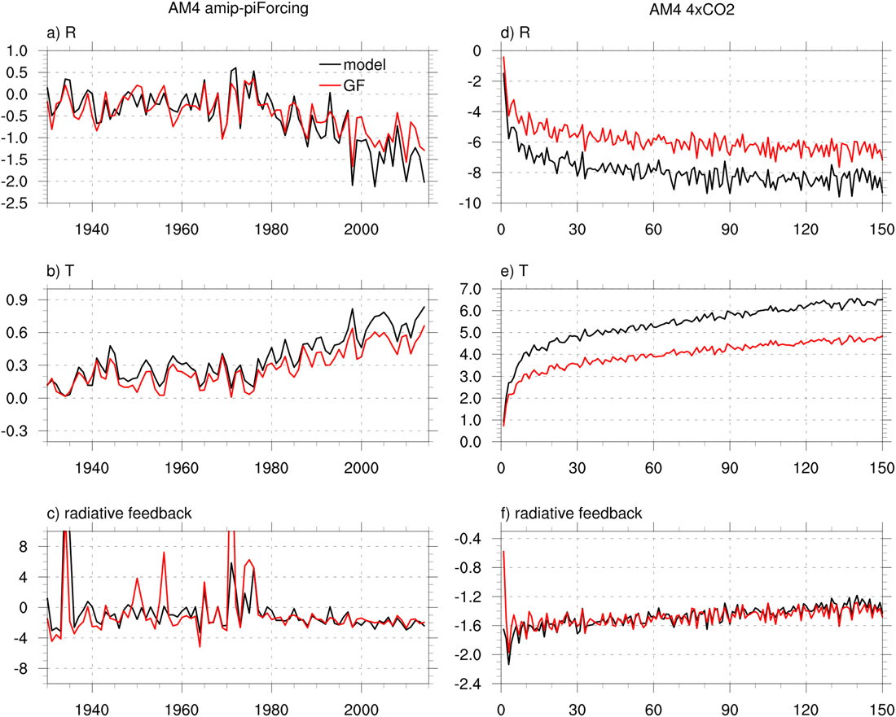
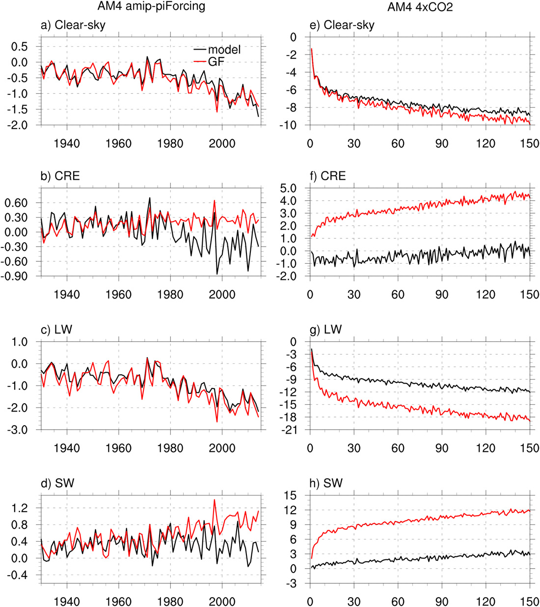
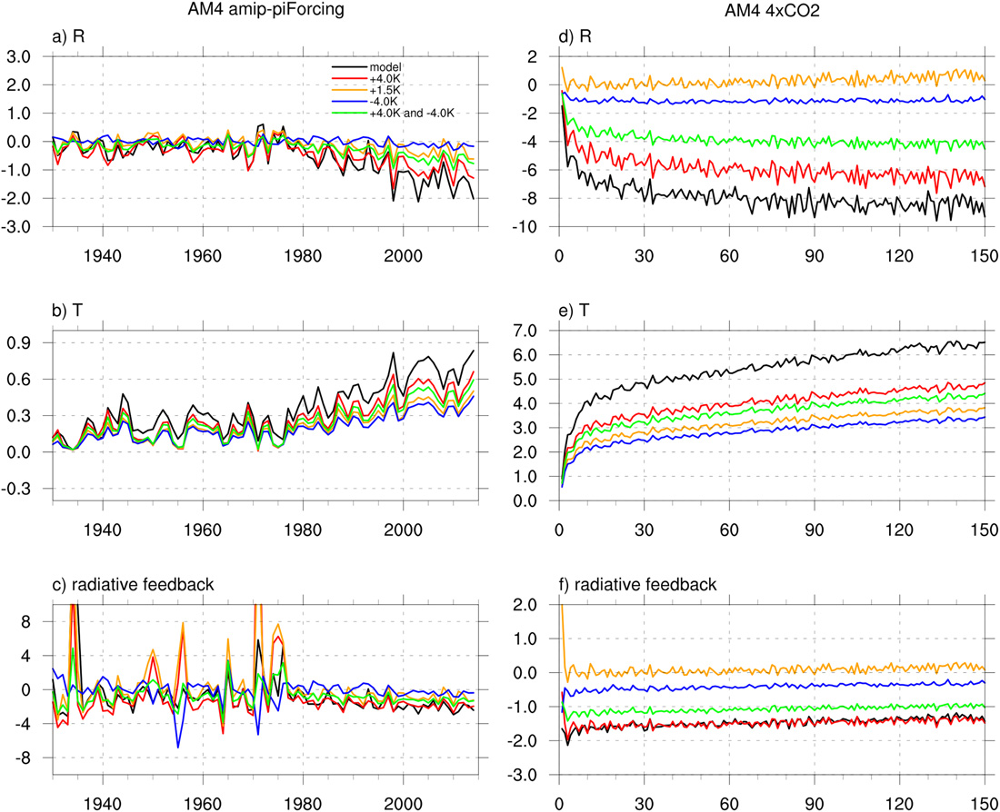
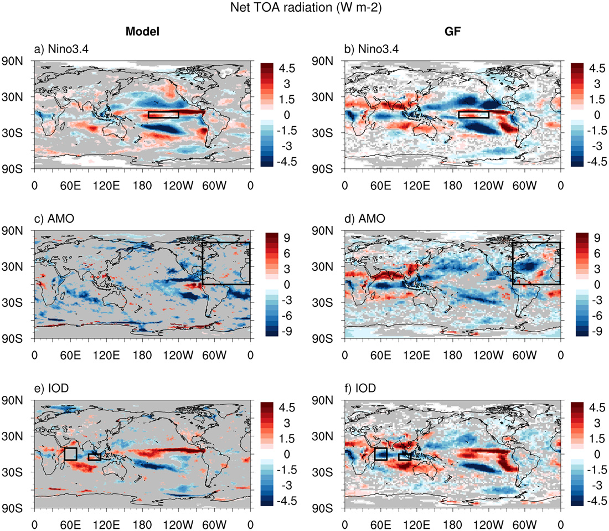
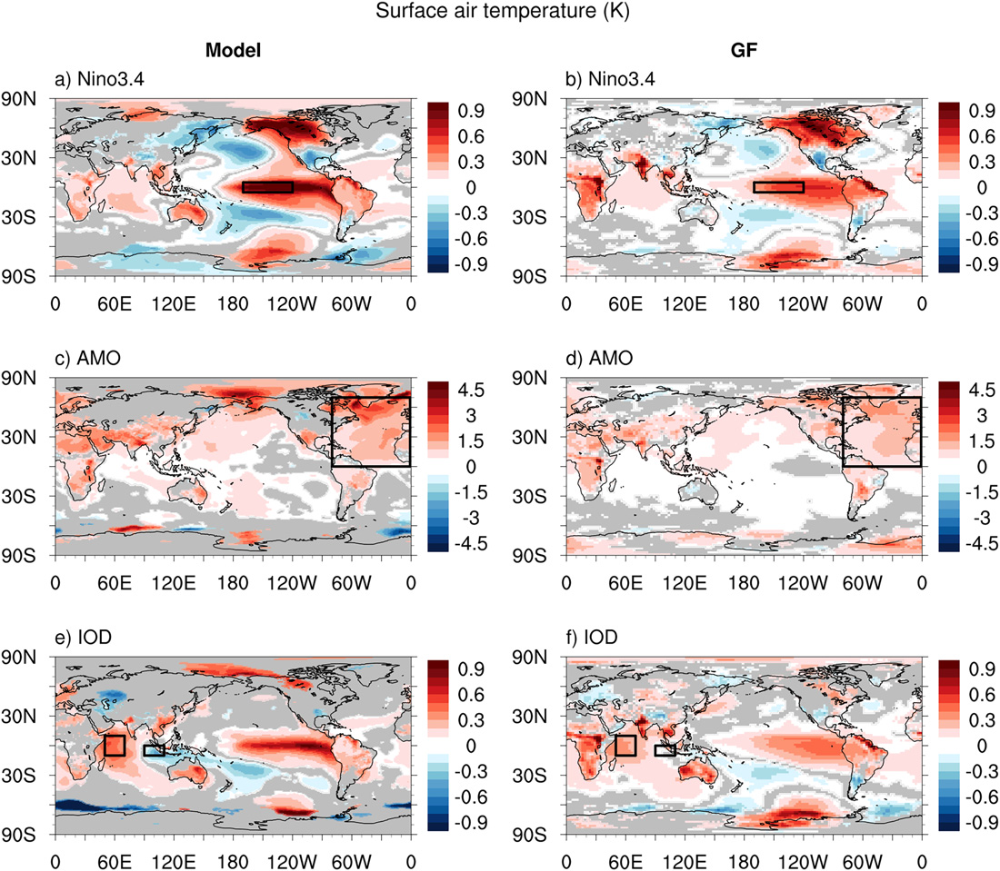
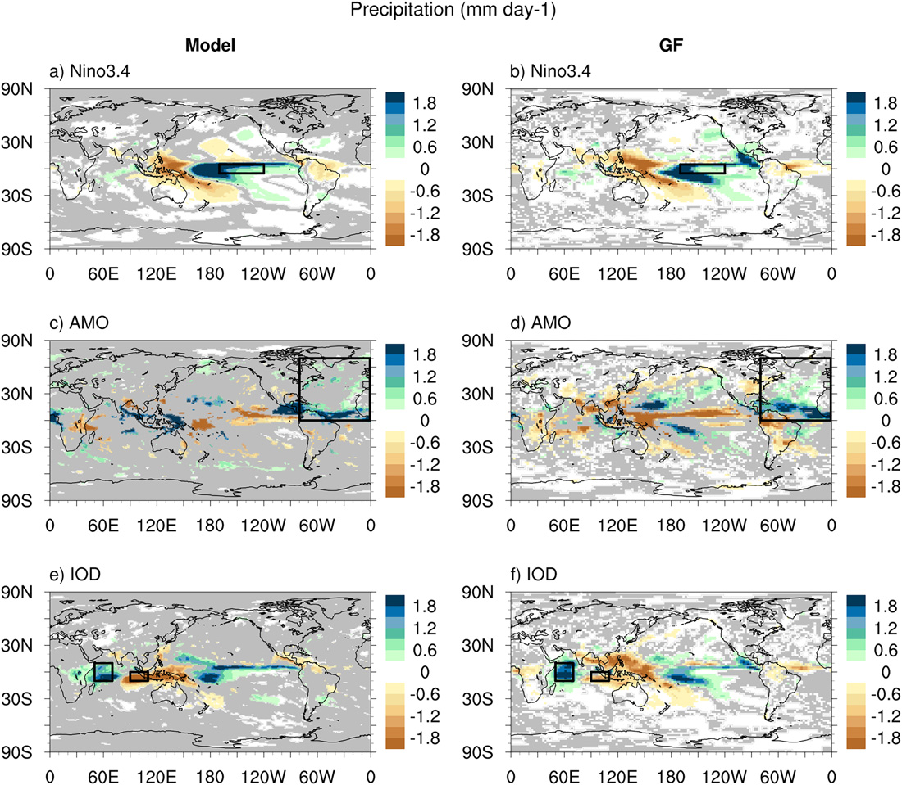
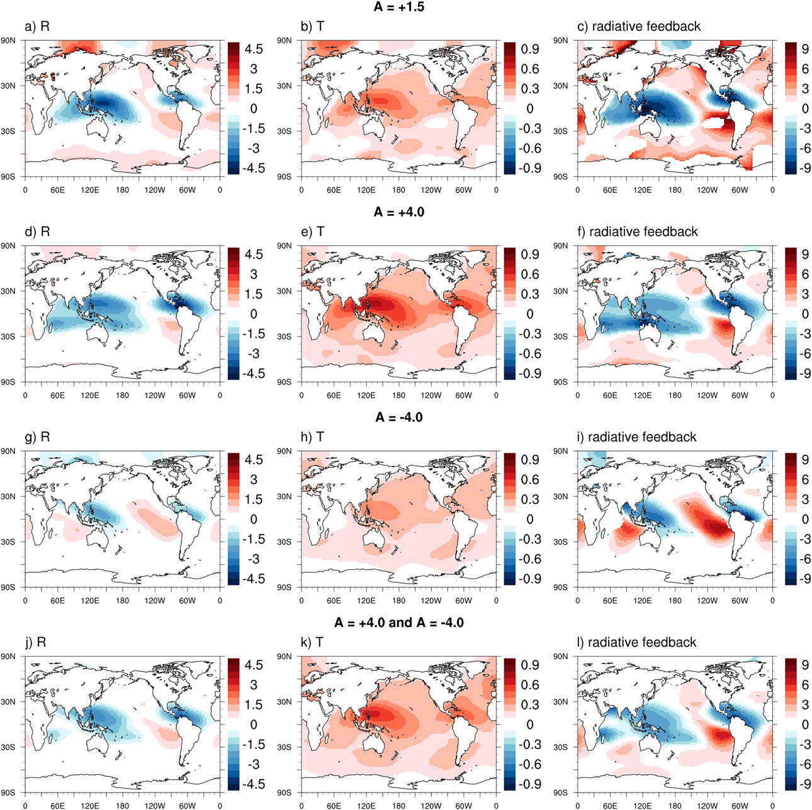

Pattern Effect Quantified
Regional SST anomalies can be linearly mapped to global-mean feedback variability with substantial skill in AM4.
Forcing and Feedback • Radiative Feedbacks
Journal of Climate (2023)
Green’s-function reconstruction in AM4/CM4 captures major large-scale pattern-effect feedback signatures while exposing tropical regions where linearity breaks down.

Pattern Effect Quantified
Regional SST anomalies can be linearly mapped to global-mean feedback variability with substantial skill in AM4.
Global vs Regional Skill
Interannual variability is captured better than absolute magnitude, especially for cloud-radiative components.
Method Sensitivity Matters
GF performance depends on perturbation amplitude, sign, integration length, and significance threshold choices.
Paper Citation
Zhang, B., M. Zhao, and Z. Tan, 2023: Using a Green’s Function Approach to Diagnose the Pattern Effect in GFDL AM4 and CM4. Journal of Climate, 36, 1105-1124. https://doi.org/10.1175/JCLI-D-22-0024.1
Diagnose and attribute the SST pattern effect by estimating how SST anomalies at each ocean grid point contribute to global and local climate responses in AM4 and CM4 frameworks.
Figures from Zhang et al. (2023), JCLI-D-22-0024.1.
Figure 2

Figure 3

Figure 9

Model-vs-GF regional comparisons for Nino3.4, AMO, and IOD SST patterns.
Figure 5

Figure 6

Figure 7

Figure 8
